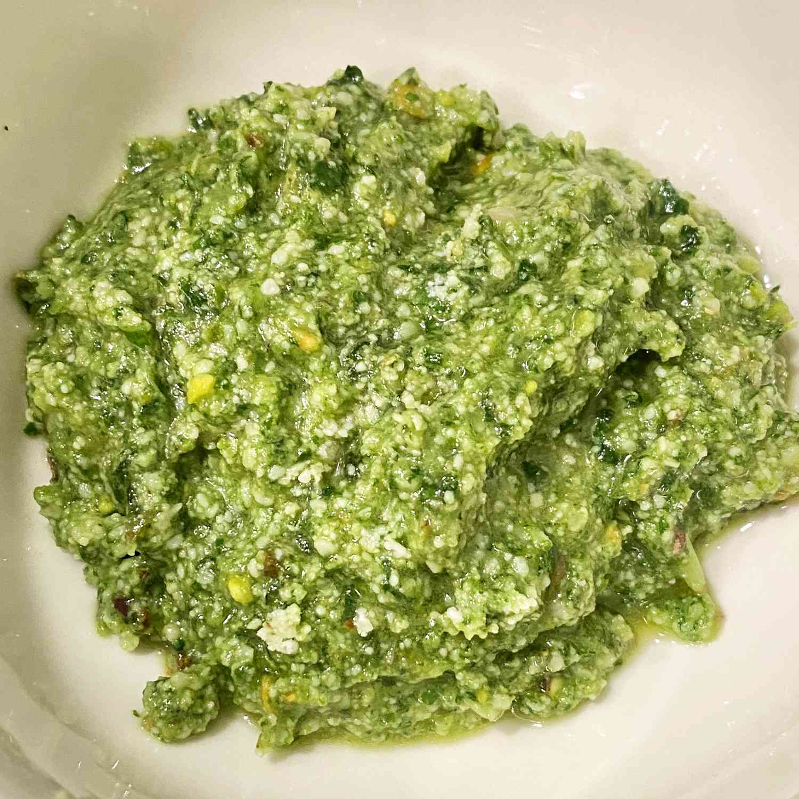

Homemade Pesto
Home

What is pesto? Pesto is a vibrant green, fresh-tasting sauce that originated in Genoa, Italy. It's traditionally made with a combination of fresh basil, Parmesan cheese, olive oil, garlic, and pine nuts.
The name “pesto” comes from the Italian word “pestare,” which means “to crush.” Though modern recipes (such as this one) rely on blenders or food processors, the ingredients for pesto are traditionally crushed together using a mortar and pestle.
- Basil>: This pesto recipe calls for three cups of packed fresh basil.
- Cheese: For the most delicious pesto, grate your Parmesan by hand.
- Oil: Use a good quality olive oil for the best results.
- Nuts: You’ll need ½ cup of pine nuts.
- Garlic: Fresh garlic lends tons of bold flavor.
- Lemon Juice: Lemon juice is optional, but it adds welcome brightness.
And how to make it?
Simply combine the ingredients in a food processor or blender, then process or blend until smooth. It truly couldn’t be easier! Find the full, step-by-step pesto recipe with detailed instructions below.
- This is one recipe where you absolutely must use fresh garlic, according to Nicole. Don’t even think about using the jarred stuff!
- Though the recipe doesn’t call for toasting the pine nuts, Nicole thinks bringing out the oils makes the flavor much deeper and richer.
- If you’re making a big batch of pesto and want to use something a bit more affordable than pine nuts, Nicole recommends using toasted walnuts instead.
PS: I don't have even a clue who is Nicole, but I suppose she is some chef or a incridible at cooking person.